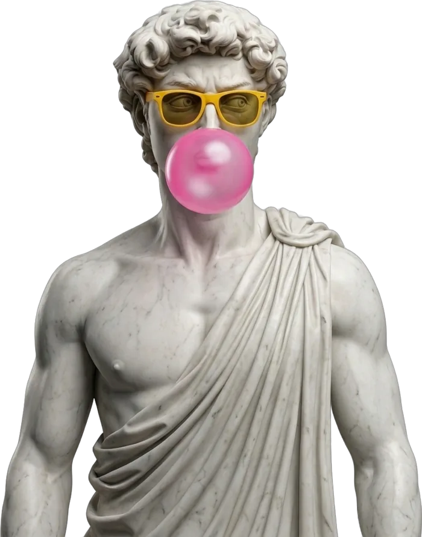
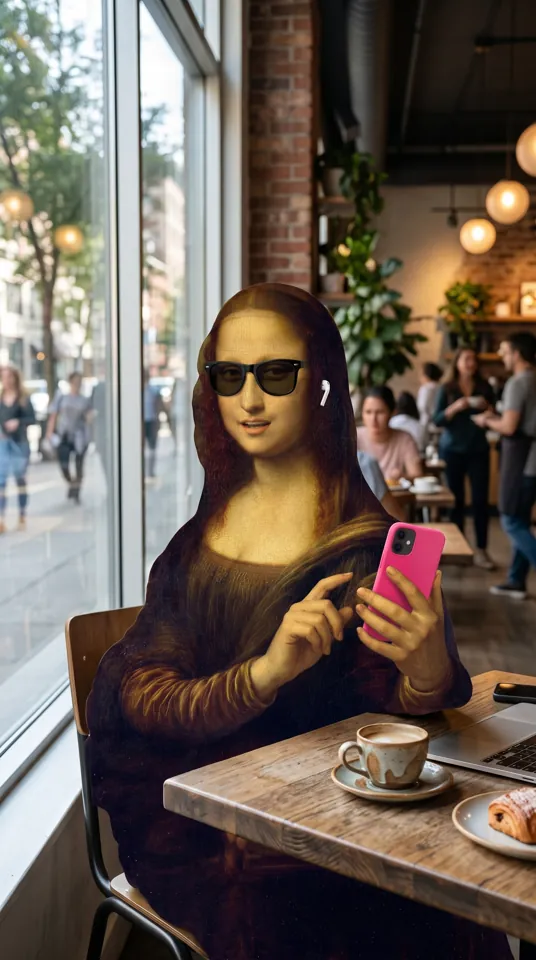

Guía · 1 de 9
Guía · 1 de 9
Guía · Desmontar un reelSaca la very sweetreceta
de cualquier reel
El gancho, cómo lo grabó, las promesas que te dejan viendo y el guion. Paso a paso, con un reel de tu referente o de tu competencia.
El que se salió de su promedio
No escojas cualquier video. Busca en su perfil el que tiene muchas más vistas que los demás: ahí hay algo que funcionó.
Copia el enlace del reel
En Instagram abre el reel, toca los tres puntos y copia el enlace. Pégalo en un descargador de reels y guarda el video en tu celular o tu computador.

El error que no te deja crecer…
Suéltalo y espera un minuto
Desmonta un reel
Oyendo lo que dice…
Los primeros 3 segundos
Mira las dos cosas: lo que dice y lo que se ve. Casi siempre el gancho que retiene junta las dos.
0:00Gancho · curiosidad«¿Por qué te paraste a ver este video, si ni siquiera tiene un gancho?»
se ve: camina hacia una cáscara de plátanoCómo lo grabó
Aquí ves el ritmo que puedes copiar sin copiarle la cara ni la idea a nadie.
Si tus videos tienen 3 cortes por minuto y el suyo 9, ya sabes una cosa que puedes cambiar en el próximo.
El orden de las piezas
El video se parte en tramos. Toca cada uno.
A tu baúl, y a tu guion
Marca lo que te sirve y guárdalo. La próxima vez que escribas, partes de una estructura que ya funcionó.
Gancho: ¿Por qué tus videos no pasan de 300 vistas, si los grabas todos los días?
Promesa: Hay una cosa que los que más crecen hacen en el segundo uno…
 Listo · tu turno
Listo · tu turno
Desmonta tu primer reel
- El gancho, segundo a segundo
- Cómo lo grabó: cortes, encuadres y ritmo
- La estructura y sus open loops
Para hacerlo necesitas tu cuenta de Cherry Studio. Crearla es gratis.